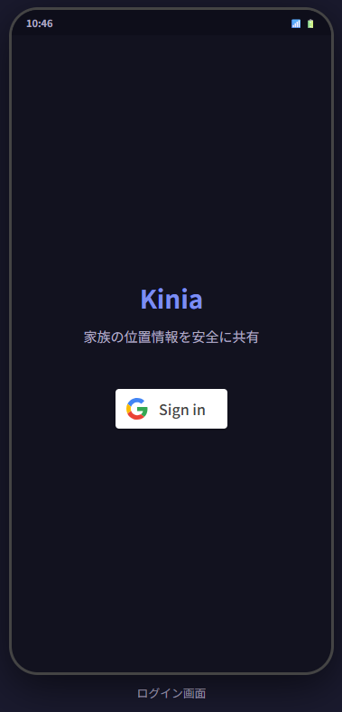
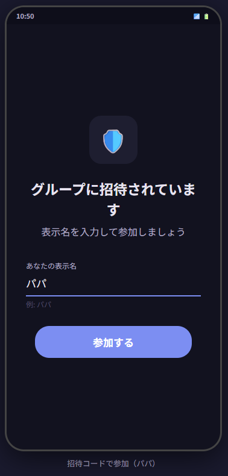
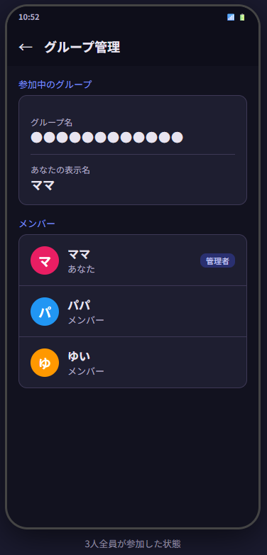
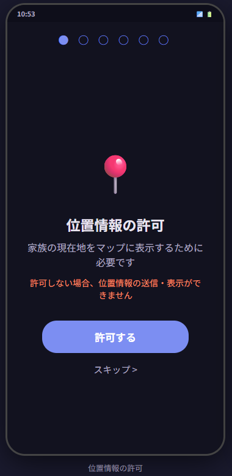
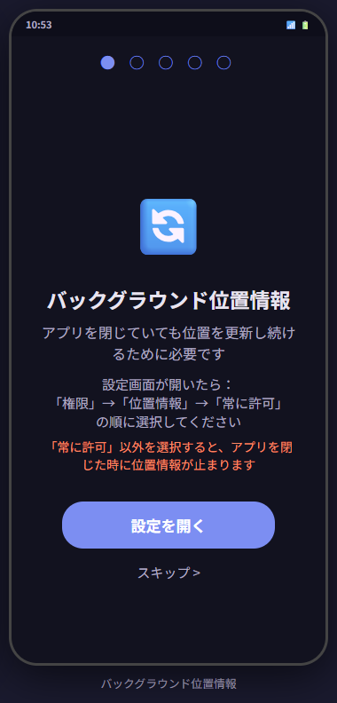
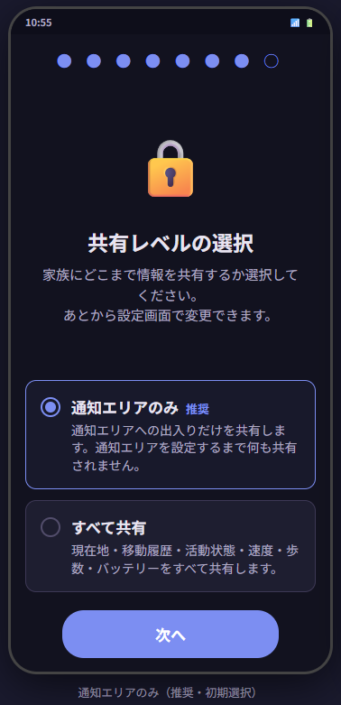
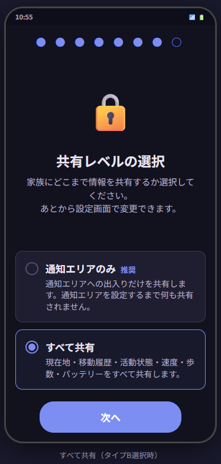
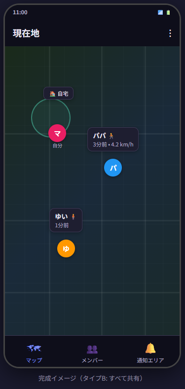

招待された方向けガイド
参加リンクで案内された方へ
ご家族からKiniaの招待リンクを受け取りましたか？
このページでは、あなたがやるべき設定だけをまとめています。
所要時間: 約5分
やることは3つだけ
STEP 1アプリをインストール
↓
STEP 2招待リンクから参加
↓
STEP 3権限を許可
↓
DONE完了!
Kiniaをインストール 約1分
-
Google Play で「Kinia」を検索
または こちらのリンク から直接アクセス
- 「インストール」をタップ

インストール後に起動するとこの画面が表示されます
Googleアカウントが必要です。
ふだんスマホで使っているGoogleアカウントでOKです。
新たにアカウントを作成する必要はありません。
ふだんスマホで使っているGoogleアカウントでOKです。
新たにアカウントを作成する必要はありません。
招待リンクから参加 約2分
-
受け取った招待リンクをタップ
LINEやメールで届いた
https://kinia.io/invite/xxxxxのリンクです -
Kiniaアプリが自動で開きます
まだログインしていない場合は「Googleでログイン」が表示されます
-
ニックネームを入力
家族の地図上に表示される名前です。
例: 「パパ」「名前」「ニックネーム」など - 「参加する」をタップ

ニックネームを入力して「参加する」
→

参加完了!
メンバー一覧に名前が表示されます
メンバー一覧に名前が表示されます
参加完了!
これでご家族のグループに参加できました。
続いて、アプリが正しく動作するための権限を設定します。
これでご家族のグループに参加できました。
続いて、アプリが正しく動作するための権限を設定します。
リンクが開けない場合
Kiniaアプリがインストールされていることを確認してください。
それでも開けない場合は、アプリを起動して「招待コードで参加する」を選び、
リンク末尾の5桁のコード（例: A3K7P）を手入力してください。
Kiniaアプリがインストールされていることを確認してください。
それでも開けない場合は、アプリを起動して「招待コードで参加する」を選び、
リンク末尾の5桁のコード（例: A3K7P）を手入力してください。
権限を許可する 約2分
参加後、アプリが順番に権限の許可を案内します。
表示されるボタンをタップして進めるだけでOKです。
この設定が一番大事です。
特に「バックグラウンド位置情報」と「省電力の除外」を許可しないと、
アプリを閉じた瞬間に位置の更新が止まります。
特に「バックグラウンド位置情報」と「省電力の除外」を許可しないと、
アプリを閉じた瞬間に位置の更新が止まります。
| 権限 | 操作 | なぜ必要？ |
|---|---|---|
| 位置情報 | 「許可する」をタップ | 位置を共有するため |
| バックグラウンド 位置情報 |
設定画面で「常に許可」 | アプリを閉じても動作 |
| 活動認識 | 「許可」をタップ | 歩行/車の判別 |
| 通知 | 「許可」をタップ | 通知エリアの通知受信 |
| 省電力の除外 | 「許可」をタップ | スリープ中も動作 |

① 位置情報の許可
→

② バックグラウンド位置情報
「常に許可」を選択
「常に許可」を選択
「常に許可」って不安...
Kiniaは移動中だけGPSを使い、止まっているときはほとんどバッテリーを消費しません。
位置データはグループ内でのみ共有され、外部には公開されません。
詳しくは 安全性について をご覧ください。
Kiniaは移動中だけGPSを使い、止まっているときはほとんどバッテリーを消費しません。
位置データはグループ内でのみ共有され、外部には公開されません。
詳しくは 安全性について をご覧ください。
共有レベルについて
権限設定の最後に「共有レベル」を選ぶ画面が表示されます。
あなたの情報をどこまで家族に見せるかを決める設定です。

通知エリアのみ（推奨・初期設定）
位置は非表示、通知だけ届く
位置は非表示、通知だけ届く
or

すべて共有
地図に位置・軌跡を表示
地図に位置・軌跡を表示
迷ったら「通知エリアのみ」でOK。
あとからいつでも変更できます。
メニュー → 共有設定 から切り替えられます。
あとからいつでも変更できます。
メニュー → 共有設定 から切り替えられます。
セットアップ完了!
お疲れさまでした。これであなたのセットアップは完了です。

家族の位置がマップに表示されます
（共有レベルが「すべて共有」の場合）
（共有レベルが「すべて共有」の場合）
位置の反映には少し時間がかかります。
セットアップ直後はまだ位置情報が送信されていない場合があります。
アプリを開いた状態で少し歩いてみると、1〜2分で位置が反映されます。
セットアップ直後はまだ位置情報が送信されていない場合があります。
アプリを開いた状態で少し歩いてみると、1〜2分で位置が反映されます。
うまくいかないとき
位置が更新されない
Androidの設定 → アプリ → Kinia → 位置情報 で
「常に許可」になっているか確認してください。
通知が届かない
Androidの設定 → アプリ → Kinia → 通知 で
通知が許可されているか確認してください。
解決しない場合
kinia.app@gmail.com までご連絡ください。
端末名・Androidバージョン・症状を添えていただくとスムーズです。